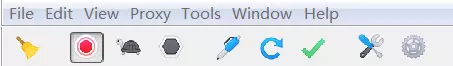

Charles

Charles 是在 PC 端常用的网络封包截取工具，在做移动开发时，我们为了调试与服务器端的网络通讯协议，常常需要截取网络封包来分析。除了在做移动开发中调试端口外，Charles 也可以用于分析第三方应用的通讯协议。配合 Charles 的 SSL 功能，Charles 还可以分析 Https 协议。
Charles 主要功能
- 截取 Http 和 Https 网络封包。
- 支持重发网络请求，方便后端调试。
- 支持修改网络请求参数。
- 支持网络请求的截获并动态修改。
- 支持模拟慢速网络。

?> Charles 的主菜单包括：File、Edit、View、Proxy、Tools、Window、Help。用的最多的主菜单分别是 Proxy 和 Tools。
Proxy 菜单包含以下功能：
- Start/Stop Recording：开始/停止 🤚 记录会话。
- Start/Stop Throttling：开始/停止 🤚 节流。
- Enable/Disable Breakpoints：开启 🔛/关闭断点模式。
- Recording Settings：记录会话设置。
- Throttle Settings：节流设置。
- Breakpoint Settings：断点设置。
- Reverse Proxies Settings：反向代理设置。
- Port Forwarding Settings：端口转发。
- Windows Proxy：记录计算机 💻 上的所有请求。
- Proxy Settings：代理设置。
- SSL Proxying Settings：SSL 代理设置。
- Access Control Settings：访问控制设置。
- External Proxy Settings：外部代理设置。
- Web Interface Settings：Web 界面设置。
Tools 菜单包含以下功能：
- No Caching Settings：禁用 🈲️ 缓存设置。
- Block Cookies Settings：禁用 🈲️ Cookie 设置。
- Map Remote Settings：远程映射设置。
- Map Local Settings：本地映射设置。
- Rewrite Settings：重写设置。
- Black List Settings：黑名单设置。
- White List Settings：白名单设置。
- DNS Spoofing Settings：DNS 欺骗设置。
- Mirror Settings：镜像设置。
- Auto Save Settings：自动保存设置。
- Client Process Settings：客户端进程设置。
- Compose：编辑修改。
- Repeat：重复发包 📦。
- Repeat Advanced：高级重复发包 📦。
- Validate：验证。
- Publish Gist：发布要点。
- Import/Export Settings：导入/导出设置。
- Profiles：配置文件。
- Publish Gist Settings：发布要点设置。
Charles 使用方式
通过 Charles 进行 PC 端抓包
- Charles 会自动配置浏览器和工具的代理设置，所以说打开工具直接就已经是抓包状态了。只需要保证一下几点即可：
- 确保 Charles 处于 Start Recording 状态。
- 勾选 Proxy | Windows Proxy 和 Proxy | Mozilla FireFox Proxy。
通过 Charles 进行移动端抓包
- 手机抓包的原理，和 PC 类似，手机通过把网络委托给 Charles 进行代理与服务端进行对话。具体步骤如下：
- 使手机和电脑在一个局域网内，不一定非要是一个 IP 段，只要是在同一个路由器下即可。 ######电脑端配置：
- 关掉电脑端的防火墙（这点很重要）。
- 打开 Charles 的代理功能：通过主菜单打开 Proxy | Proxy Settings 弹窗，填入代理端口(端口默认为 8888，不用修改)，勾选 Enable transparent HTTP proxying。
- 如果不需要抓取电脑上的请求，可以取消勾选 Proxy | Windows Proxy 和 Proxy | Mozilla FireFox Proxy。 ######手机端配置：
- 通过 Charles 的主菜单 Help | Local IP Address 或者通过命令行工具输入 ipconfig 查看本机的 IP 地址。
- 设置代理：打开手机端的 WIFI 代理设置，输入电脑 IP 和 Charles 的代理端口。
- 设置好之后，我们打开手机上的任意需要网络请求的程序，就可以看到 Charles 弹出手机请求连接的确认菜单（只有首次弹出），点击 Allow 即可完成设置。
- 完成以上步骤，就可以进行抓包了。
通过 Charles 进行 HTTPS 抓包
- HTTPS 的抓包需要在 HTTP 抓包基础上再进行设置。需要完成一下步骤：
- 完成 HTTP 抓包配置。
- 电脑端安装 Charles 证书：通过 Charles 的主菜单 Help | SSL Proxying | Install Charles Root Certificate 安装证书。
- 设置 SSL 代理：通过主菜单打开 Proxy | SSL Proxy Settings 弹窗，勾选 Enable SSL proxying。
- 移动端安装 Charles 证书：通过 Charles 的主菜单 Help | SSL Proxying | Install Charles Root Certificate on a Mobile Device or >Remote Browser 安装证书。
- 设置好之后，我们打开手机上的任意需要网络请求的程序，就可以看到 Charles 弹出手机请求连接的确认菜单（只有首次弹出），点击 Allow 即可完成设置。
- 完成以上步骤，就可以进行 HTTPS 抓包了。